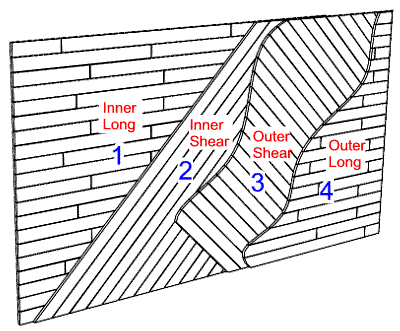

COPYRIGHT Tim Lovett, James King © June 2004
..
A four layer laminated hull planking has been suggested. See Monocoque Planking
Clearly the strongest method available, the technique utilizes the best things about wood (tensile strength) to combat the worst (shear strength) See Joining Big Logs

|
Design Notes: The Build Sequence Working from one end, the 3rd layer (Outer Shear) presents a problem, the planks must be fitted from underneath. There are a number of ways to address this issue. 1. Don't start layer 3 until the full length layer 2 is finished and then begin planking layer 3 from the other end, always fixing on top of existing planks. This means half the planking work is done by the time the ark is fully enclosed, with the remaining 2 layers affixed during the extended period of internal fitout. Problems are; scaffolding moved twice, and possible problems with differential shrinkage of the timber, layer 3 goes on top of L2 immediately on one end but after a long delay at the other (assuming the planking takes some time). But I guess we are hoping for some equilibrium seasoned timber and a stable humidity. 2. Don't worry, just work out a way to clamp the L3 boards in from the underside, holding them up from underneath while the pitch drips everywhere. Or maybe turn the ark upside down.(joke) 3. Fit a single L3 plank at a distance from the advancing L3 layer and work backwards until you tie in last plank. Since it is not tongue and groove this should work OK. I think I favour this one since it is only one fitted plank per bulkhead distance. The animation below shows this. |